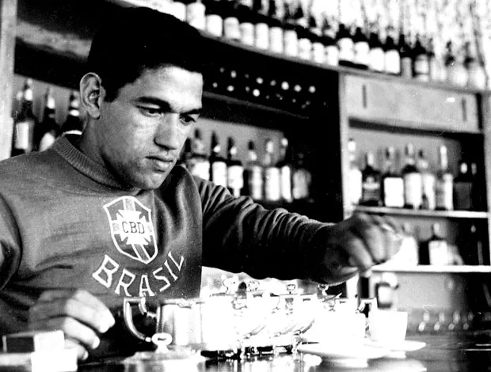
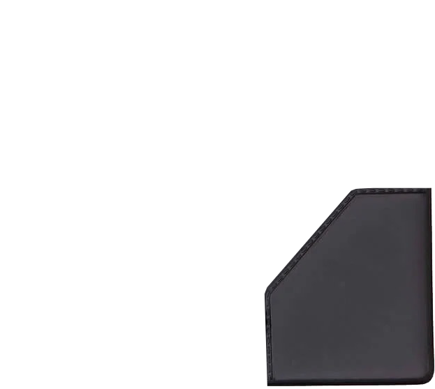

SAIDEIRA


Conta Bibliográfica
ADÃO, Kleber do Sacramento. O botequim e a geografia do ócio na paisagem compartimentada da cidade. São João del Rei: FES, 1998.
ARGAN, Giulio Carlo. Sobre a Tipologia em Arquitetura, 1963. In: NESBITT, Kate (org-). Nova Agenda para a Arquitetura. Antologia Teorica 1965-1995. São Paulo: Cosac Naify, 2006.
AUGÉ, Marc. Não-lugares. Campinas: Papirus, 1994.
BACHELARD, Gaston. A poética do espaço. São Paulo: Martins Fontes, 1993.
BARRAL, Gilberto Luiz Lima. Nos bares da cidade azer e sociabilidade em Brasília. Brasília: UnB, 2012. Tese de doutorado.
BAUDRILLARD, Jean. Simulacros e Simulação. Lisboa: Relógio d'Água, 1991.
BENJANIN, Walter. Rua de mão única. São Paulo: Editora Brasiliense, 1987.
ISEKI, Yu. KAIJIMA, Momoyo. STALDER, Laurent. Architectural Wthnography. Tokyo: TOTO Publishing, 2018.
JACOBS, Jane. Morte e vida de grandes cidades. São Paulo: Martins Fontes, 2000.
KAIJIMA, Momoyo. KURODA, Junzo. TSUKAMOTO, Yoshiharu. Made in Toxyo. Tokyo: Kajima Institute, 2001.
KAIJIMA, Momoyo. TSUKAMOTO, Yoshiharu. behaviorology. Nova York: Rizzoli International Publications, 2010.
KAISER, Klara. MORI, Koiti. Bares de Sao Paulo. Revista Desenho, n.2. São Paulo, mar. 1970.
MAGNANI, José Guilherme Cantor. Lazer dos Trabalhadores. Revista São Paulo em Perspectiva, n.2. p. 37-39. São Paulo, jul. 1988.
SCHMID, Christian. A teoria da produção de espaço de Henry Lefebore: em direção a uma dialética tridimensional. Tradução de Marta Marques. Revista GEOUSP - espaço e tempo, n.32. p. 89-109. São Paulo, 2012.
SILVA, Luiz Antonio Machado da. 0 Significado do Botequim, 1969. In: KOVARIC, Lucio (org.). Cidades: usos e abusos. São Paulo: Editora Brasiliense, 1978.
SIMAS, Luiz Antonio. O corpo encantado das ruas. Rio de Janeiro: Civilização Brasileira, 2019.
TOLEDO, Luiz Henrique de. Lógicas no Futebol. São Paulo: FFLCH-USP, 2000. Tese de doutorado.
TSCHUMI, Bernard. Architecture and Disjunction. Cambridge: The MIT Press, 1996.
TSCHUMI, Bernard. Arquitetura e Limites I, II e III, 1980. In: NESBITT, Kate (org.). Uma Nova Agenda para a Arquitetura. Antologia Teorica 1965-1995. São Paulo: Cosac Naify, 2006.
Encruzilhadas #05 Boteco. Gabriela Moreira e Luiz Antonio Simas. Rio de Janeiro：Central3, 02 set. 2019. Podcast. Disponivel em: Spotify - Acesso em: 27 out. 2019.